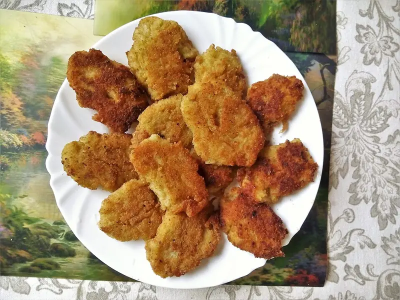

Фото: Nickispeaki, CC BY-SA 4.0

Постные котлеты из капусты
Нежные котлеты из белокочанной капусты с манкой, без яиц и молока
60 мин4 порц.260 ккал на порциюБ 7 · Ж 11 · У 35Русская кухня
Продукты на 4 порц.
- Капуста белокочанная600 г
- Лук репчатый1 шт
- Манная крупа4 ст. л.
- Мука пшеничная1 ст. л.
- Чеснок1 зуб.
- Панировочные сухари40 г
- Растительное масло3 ст. л.
- Укроп по желаниюпо вкусу
- Соль1 ч. л.
- Перец чёрный молотыйпо вкусу
- Вода2000 мл
Как готовить
- Капусту нарежьте крупными кусками и опустите в кипящую подсоленную воду на 7-8 минут, до мягкости.
- Откиньте на дуршлаг, остудите и хорошо отожмите руками.
- Пропустите капусту и лук через мясорубку или мелко порубите в блендере. Снова отожмите лишний сок.
- Добавьте манку, муку, выдавленный чеснок, рубленый укроп, соль и перец. Перемешайте и оставьте на 15 минут, чтобы манка набухла.
- Влажными руками сформуйте котлеты и обваляйте в сухарях.
- Жарьте на разогретом масле на среднем огне по 4-5 минут с каждой стороны до золотистой корочки.
Совет. Если фарш разваливается, добавьте ещё ложку манки и подождите 10 минут. Главное, хорошо отжать капусту.